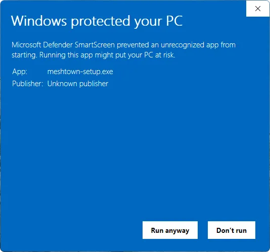
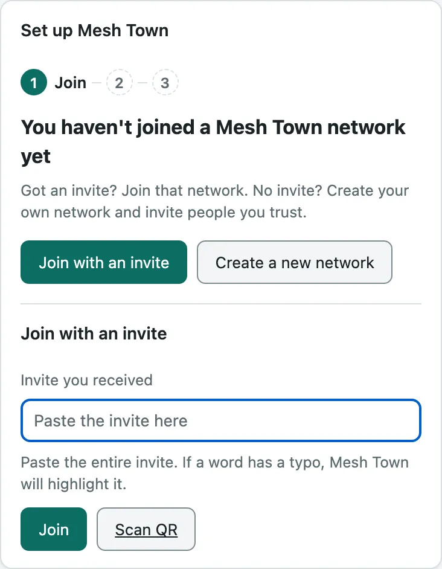
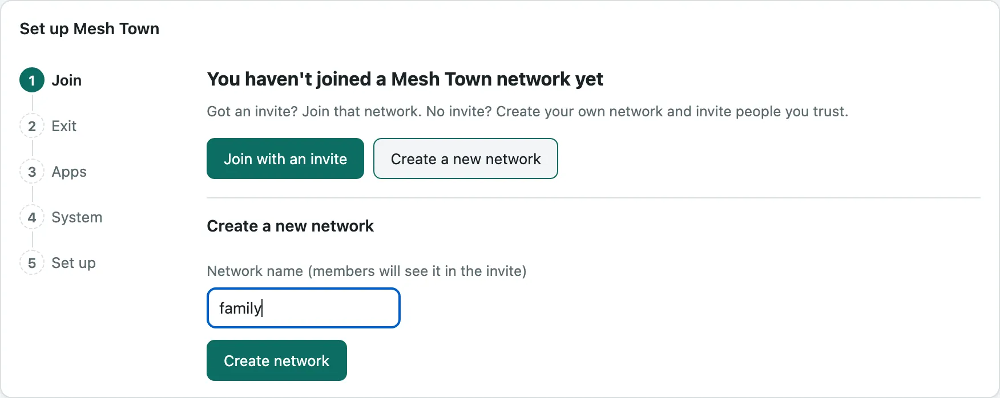
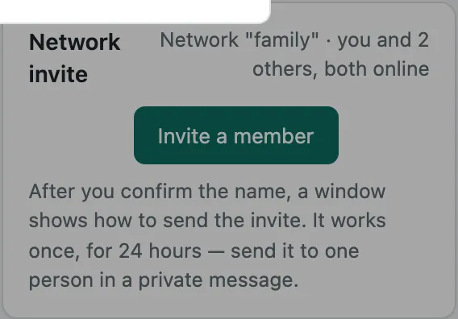
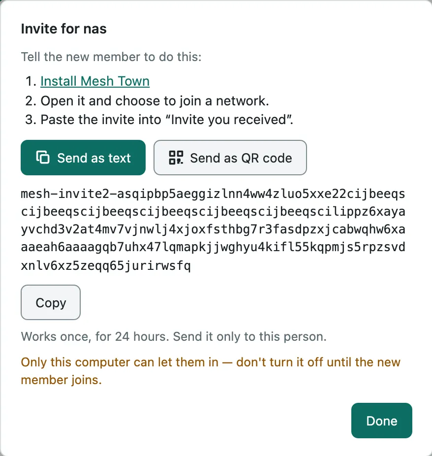
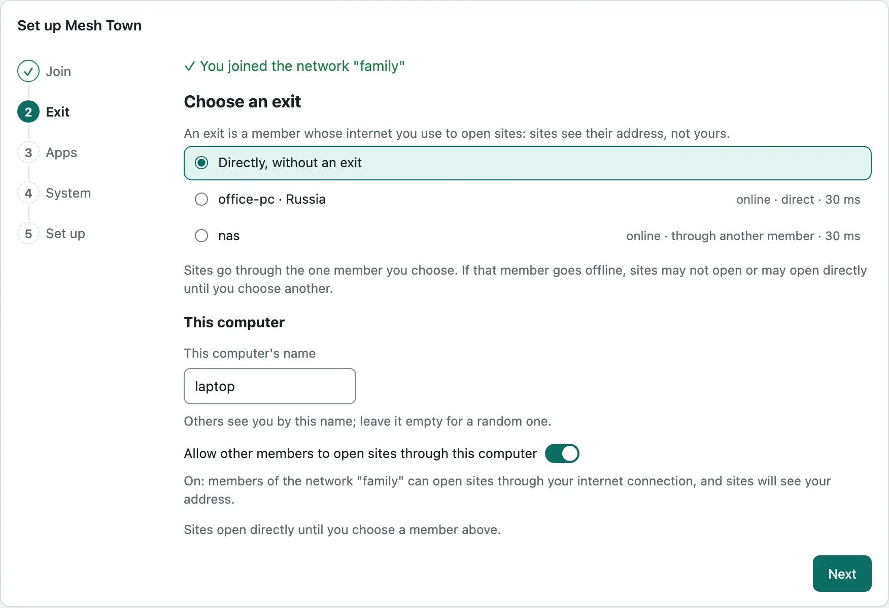
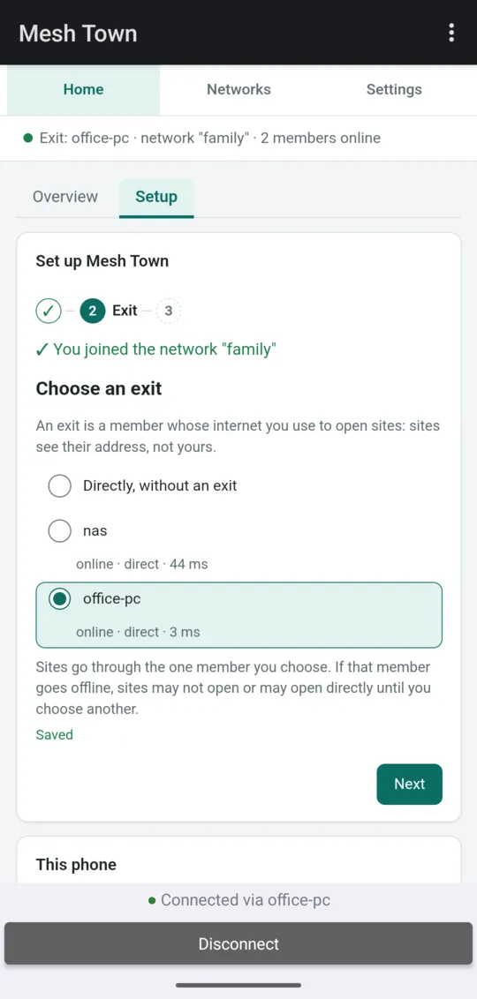
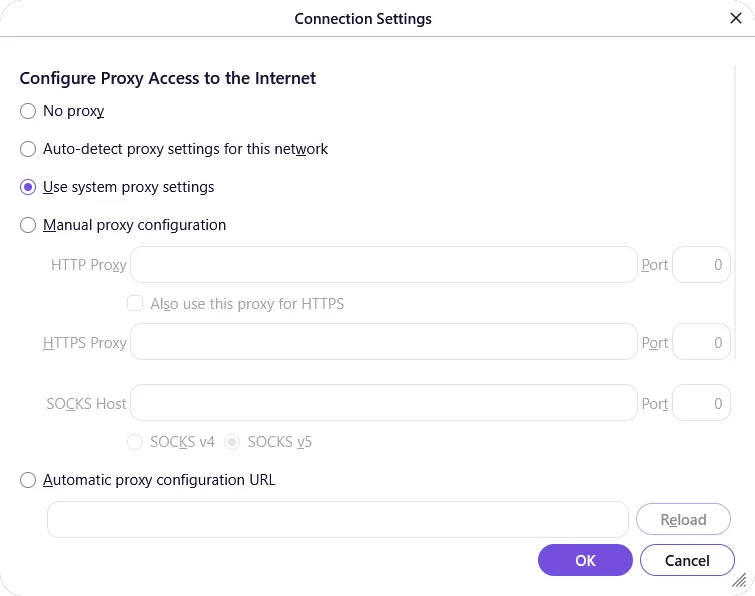

Set up Mesh Town step by step
When you finish, this device is in your network, and websites open through the member you choose.
Which device are you setting up?
Do you have an invite?
An invite is a long text or a QR code. Someone who is already in a network makes it for you.
A phone can only join a network. To start a new network, use a computer first.
-
Install Mesh Town
Windows
Download meshtown-setup.exe and open it. Windows asks for administrator permission, because the program is installed into Program Files. The last page has a Run Mesh Town box with a check mark: leave the check mark, and the program starts at once.
Note. Windows may show a warning that it does not know this program. Click More info, then Run anyway.

Screenshot: The Windows warning after More info, with the Run anyway button Other ways to install, how to update, what to do if something goes wrong: Windows install guide →
macOS
Homebrew
brew install mesh-town/macos/meshtown meshtownWhen you install with Homebrew, macOS does not block the first start.
App
Download the file for Apple silicon or for Intel. Open the zip file and move MeshTown.app to Applications.
Note. The first time, macOS blocks the app because Apple has not checked it. Open System Settings → Privacy & Security and click Open Anyway.

Screenshot: macOS Privacy & Security with the Open Anyway button Other ways to install, how to update, what to do if something goes wrong: macOS install guide →
Android
- On the phone, download meshtown.apk. If Chrome warns that the file might be harmful, choose Download anyway.
- Open the file from the notification or from Downloads. Android says it is not allowed to install apps from this source: press Settings, turn on Allow from this source, go back and open the file again.
- Start Mesh Town.

Screenshot: Android Install unknown apps with the Allow from this source switch Other ways to install, how to update, what to do if something goes wrong: Android install guide →
-
Open the Mesh Town page and set a password
Windows
A Mesh Town icon appears near the clock. Click it and choose Join or create a network… (later this item is called Open Mesh Town…).
macOS
A Mesh Town icon appears in the menu bar. Click it and choose Join or create a network… (later this item is called Open Mesh Town…).

Screenshot: The Mesh Town tray menu on Windows with the Join or create a network item 
Screenshot: The Mesh Town menu bar menu on macOS with the Join or create a network item The Mesh Town page opens in your browser. On Set a password, type a password two times and click Set password. This password only protects this page, not your network.

Screenshot: The Set a password screen with two fields and the Set password button -
Join with an invite
Ask a member of the network for an invite. You can use it only once, within 24 hours.
Windows and macOS
Click Join with an invite, paste the invite into Invite you received and click Join.

Screenshot: The Join with an invite form with an invite pasted and the Join button The page waits until a member of the network is online and lets you in. Then it shows ✓ You joined the network.

Screenshot: The page showing You joined the network Nothing happens after a minute? The person who invited you must have their device turned on, with Mesh Town running.
Android
Open Mesh Town, tap Join with an invite and paste the invite, or tap Scan QR and point the camera at the QR code on the other person's screen.

Screenshot: The phone join form with the Scan QR button Nothing happens after a minute? The person who invited you must have their device turned on, with Mesh Town running.
-
Create your network
Click Create a new network and type a name for it, for example
family. People you invite will see this name. Click Create network. Now you are the admin: the person who manages this network.
Screenshot: The Create a new network form with the name family -
Invite a device or a person
Click Invite a member. You can type who the invite is for, but you do not have to. Confirm. A window shows the invite as text; Send as QR code shows it as a QR code.

Screenshot: The Invite a member button and the optional For whom field 
Screenshot: The ready invite with Send as text, Send as QR code and the invite itself Send it to one person in a private message. It can be used only once, within 24 hours. Keep this computer turned on until the person joins.
On the other device, open this page and choose I have an invite.
When someone has joined, you can make them a second admin: Networks → Members → ⋯ → Make admin.
-
Choose an exit
An exit is a member of your network. Websites you open go through that member's internet connection, so the websites see that member's address, not yours.
Windows and macOS
On Choose an exit, choose a member. Or choose Directly, without an exit to use your own internet connection. Below, in This computer's name, type a name that other members will see, for example
laptop. Click Next.
Screenshot: The Choose an exit screen listing office-pc, nas and Directly, without an exit, and this computer's name laptop You can change the exit at any time: click the Mesh Town icon → Exit via…, or open the Home tab of the Mesh Town page.

Screenshot: The Exit via menu in the macOS menu bar 
Screenshot: The Home tab panel showing how sites open right now Android
The app chooses an exit for you. You can choose another member if you want.

Screenshot: The phone exit screen and the Connect button The exit can see the names of the websites you visit, so choose a member you trust. If that member goes offline, websites stop opening until you choose another exit.
-
Connect
Tap Connect at the bottom of the screen. Allow notifications when asked, so you know when the connection is lost. Then Android asks to set up a VPN connection: press OK.

Screenshot: The Android Connection request window with the OK button Once connected, Android may ask to let the app always run in the background: allow it, so the connection is not stopped. Then you see Connected via and the name of your exit at the bottom of the screen.

Screenshot: The phone status line reading Connected via office-pc -
Connect the browser
The page asks Where should Mesh Town open sites? Choose one of the two answers below.

Screenshot: The question Where should Mesh Town open sites and its two answers Only in one browser
Choose Only in one browser. Other programs on the computer keep going to the internet directly. Which browser do you use?
Firefox
On the Mesh Town page, choose Firefox. Click Copy next to the setup address
http://127.0.0.1:1080/proxy.pac.- In Firefox, open Settings and type proxy in the search box. Click the Settings button that appears.
- Choose Automatic proxy configuration URL and paste the address into the field below it.
- Click OK.

Screenshot: Firefox Connection Settings with Automatic proxy configuration URL Safari, Chrome, Edge or another
These browsers have no proxy setting of their own: they always use the setting of the whole computer. So they can work with Mesh Town only for all apps. Choose your browser on the Mesh Town page, then click Set up for all apps and follow these steps:
Click Copy next to the setup address
http://127.0.0.1:1080/proxy.pac.Windows
- Open Settings → Network & internet → Proxy.
- Next to Use setup script, click Set up.
- Turn on Use setup script, paste the address into Script address and click Save.

Screenshot: Edit setup script in Windows proxy settings, with the Mesh Town address macOS
- Open System Settings → Network and choose your connection.
- Click Details… and open Proxies.
- Turn on Automatic Proxy Configuration and paste the address into the URL field.
- Click OK. If you use both Wi-Fi and a cable (Ethernet), do the same for Ethernet.

Screenshot: macOS Proxies with Automatic Proxy Configuration All apps on this computer
Choose All apps on this computer. Then the browser and all other programs go through Mesh Town.
Click Copy next to the setup address
http://127.0.0.1:1080/proxy.pac.Windows
- Open Settings → Network & internet → Proxy.
- Next to Use setup script, click Set up.
- Turn on Use setup script, paste the address into Script address and click Save.
Screenshot: Edit setup script in Windows proxy settings, with the Mesh Town address macOS
- Open System Settings → Network and choose your connection.
- Click Details… and open Proxies.
- Turn on Automatic Proxy Configuration and paste the address into the URL field.
- Click OK. If you use both Wi-Fi and a cable (Ethernet), do the same for Ethernet.
Screenshot: macOS Proxies with Automatic Proxy Configuration Chrome, Edge, Safari, Brave and most other browsers use this system setting: there is nothing to change in them. Close the browser completely and open it again.
Firefox: open Settings and type proxy in the search box. Open the proxy settings that appear and check that Use system proxy settings is selected (it is selected from the start). Opera: turn off its own VPN, or websites will not go through Mesh Town.

Screenshot: Firefox Connection Settings Then choose what happens When Mesh Town is off: Open sites directly or Keep sites closed.
Check it: open http://meshtown/. It says “This browser is connected to Mesh Town” and lists the ports shared with you.


You are ready
- Open the Mesh Town page: http://127.0.0.1:7777/. If it opens, Mesh Town is running.
- Open http://meshtown/: it says “This browser is connected to Mesh Town”.
Open your devices → Add another device → Invite someone → Update, remove, fix problems →